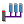
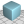
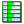
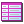

Icon
Command
Operation
Open Project
Opens a project and synchronizes with the controller contents
Save Project
Saves the current project to disk (Sync Mode only)
Connect
Opens up a sub-menu with options to connect in Sync Mode, Tool Mode or Direct Mode
Disconnect
Disconnects
Recent Work
Opens the " Recent Work dialog " Which allows reconnection to recently used connections or opening of recently used projects.

Terminal (channel 0)
Opens a Terminal tool on Channel 0 if in Tool or Sync Mode or directly connected to the command line if connected in Direct Mode
Terminal
Opens a Terminal on a user selectable channel when connected in Tool or Sync Mode
Find in Project
Find a text string in all programs in the project.
Axis Parameters
Opens the Axis Parameters Tool (Tool and Sync Modes only)

Intelligent Drives
Allows the user to configure Intelligent Drives (Sync Mode only, depends on installed add-ons)

3D Visualization
Visualize the motion of an machine controlled by the connected Trio controller. This add-on has its own help file.
Robot Tool
Jog Robot
Jog Axes
Opens the Jog Axis Tool (Tool and Sync Modes only)
Oscilloscope
Opens the Oscilloscope Tool (Tool and Sync Modes only)
Digital I/O
Opens the Digital I/O Viewer Tool (Tool and Sync Modes only)

Analogue I/O
Opens the Analogue Input Viewer Tool (Tool and Sync Modes only)
CamGen
Generate and edit cam profiles. This is implemented as an add-on. This add-on has its own help file.

TABLE Viewer
Opens the TABLE Viewer Tool (Tool and Sync Modes only)
VR Viewer
Opens the VR Viewer Tool (Tool and Sync Modes only)
Variable Watch
Opens the Variable Watch Tool (Tool and Sync Modes only)
HMI Simulator
Launch the local Uniplay HMI simulator
Options
Opens the main Options dialog
Motion Perfect Help
Displays help for Motion Perfect
TrioBASIC Help
Displays help for the TrioBASIC language
IEC Help
Displays help on IEC-61131 programming and functions selectable from the drop-down menu
Motion Stop
Stops all programs on the controller and all motion.